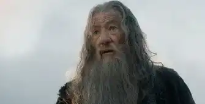

Cinéplique

This ways you fool

The character Gandalf in The Hobbit
A famous phrase from the cinema
The hidden meaning of "This way, fool": a line that reveals courage and loyalty loyalty When you think lines from the movies, chances are "This way, you fool" comes to mind. come to mind. This seemingly banal phrase has become one of the most famous lines in the history of cinema, thanks to its context, character and message. The Context: The Hobbit: An Unexpected Journey, an adaptation of J.R.R. Tolkien's novel "This Way, Madman", is the first film to feature this line. fool" is the spoken by the character Gandalf, a wizard who accompanies Bilbo the Hobbit and a company of dwarves on on a perilous quest. Gandalf addresses the company of dwarves when he finds himself surrounded by packs of orcs. He saves the company from almost certain death.
A character who saves his friends
The sentence is spoken by Gandalf. He's a wizard who travels with Bilbo the Hobbit and some dwarves. They want to recover a treasure guarded by a dragon. Gandalf says this sentence when they are attacked by orcs. He makes them them away by making a very loud noise. He saves his friends from great danger.
The original line is the English version "This way, you fool", spoken by the character Gandalf. It has been translated into different languages to suit audiences around the world. In French, for example, it it becomes "Par ici, pauvre fou", in Spanish "Por aquí, idiota", in German "Hierher, du Narr", and so on. These translations retain the meaning and emotion of the line, while respecting the linguistic particularities of each country.
A cultural symbol
The sentence "This way, you fool" is more than just a line from a film. It has become a cultural symbol. It can be found in other works, such as books, video games, comic strips and parodies. It is used in different situations to express urgency, irony or affection. Gandalf is a much-loved character among fans of Lord of the Rings and The Hobbit. That's partly thanks to this phrase.